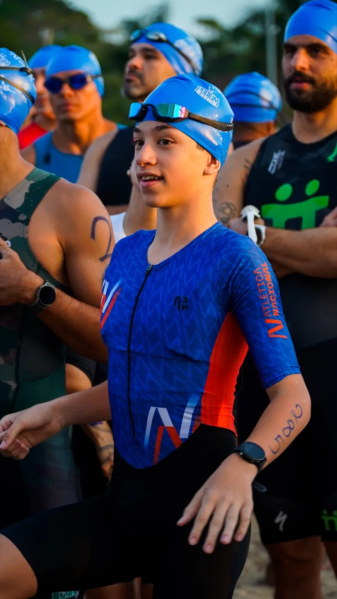
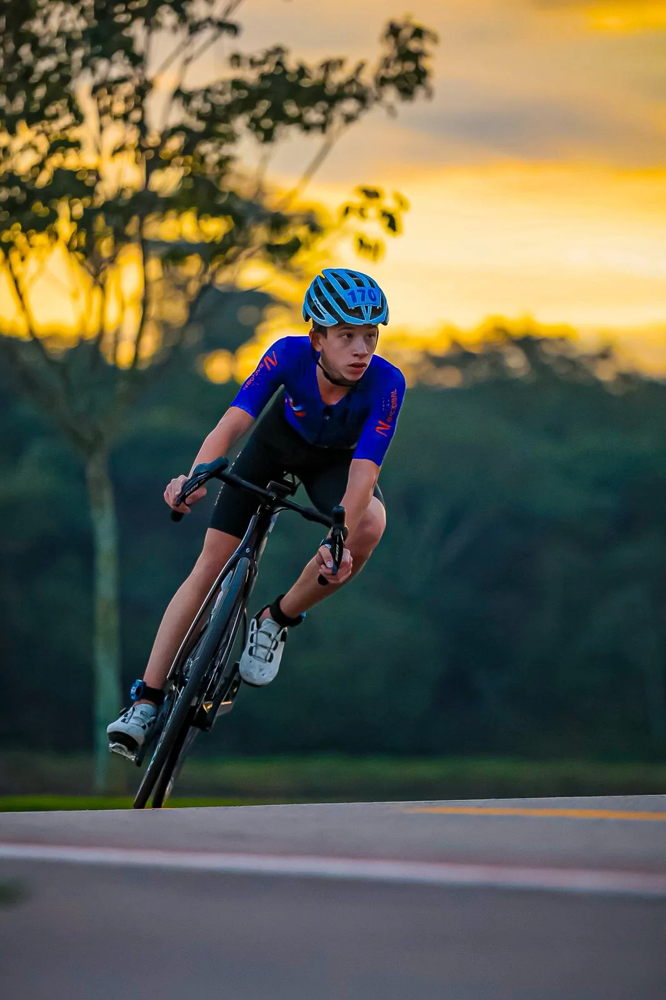
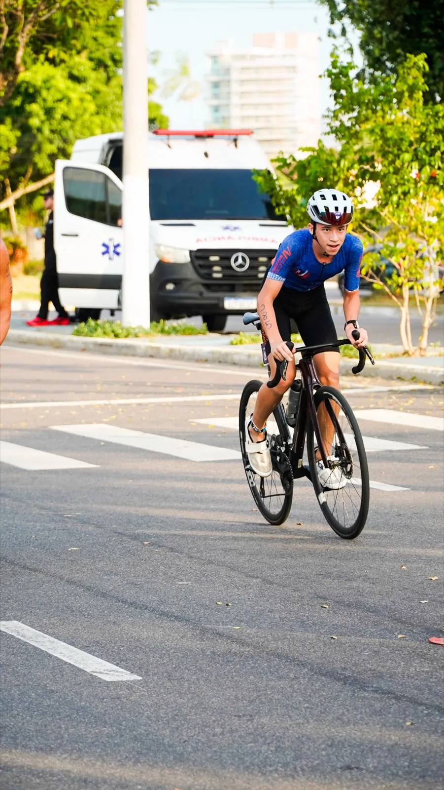
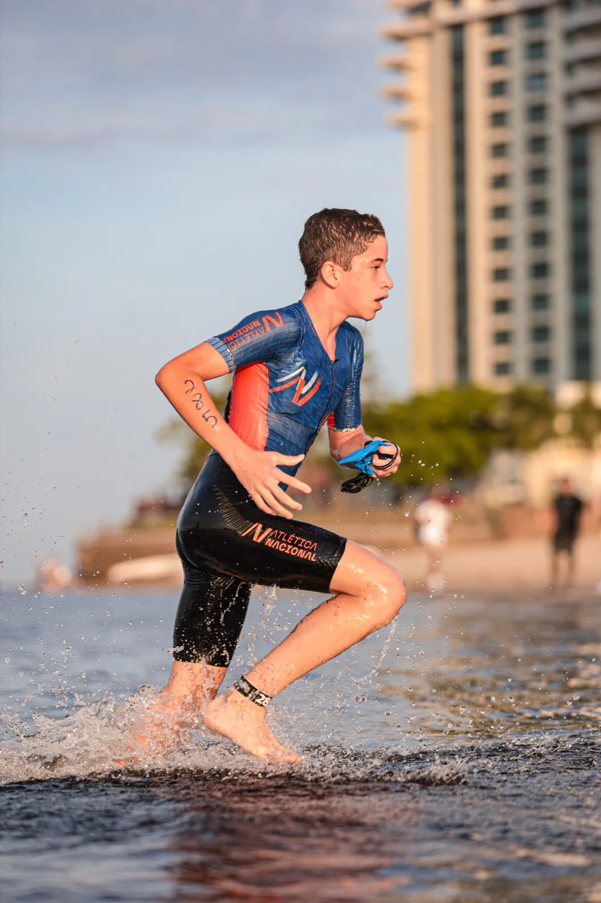
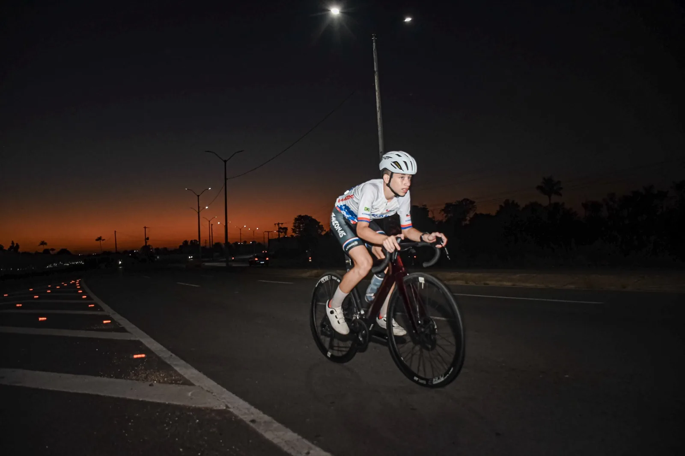
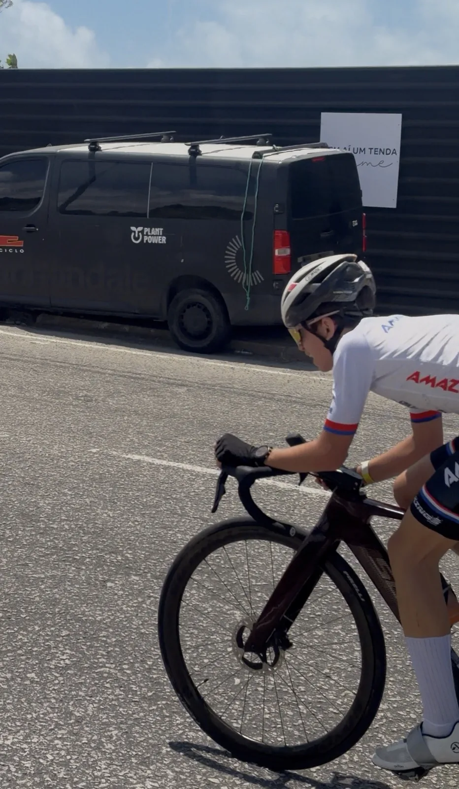

Duatlo
Brasileiro de Duatlo Sprint 2025
1º lugar, Categoria infantil, masculino 12 anos

Outros apoiadores
Quer ver a marca da sua empresa aqui também?

João tem 14 anos e descobriu o triatlo como forma de superar limites, próprios, não dos outros. Entre treinos de natação, ciclismo e corrida, ele concilia rotina escolar com uma disciplina que muita gente adulta ainda está aprendendo.
Mais do que resultado, o que move o João é a evolução constante. Cada treino é um degrau, cada prova é uma prova de que dá pra ir mais longe.
“Eu não compito só contra os outros. Compito contra o João de ontem.”
Primeiros treinos de ciclismo.
Primeiros treinos de natação.
Primeiros treinos de corrida.
Largada na categoria de base, com foco em aprender o ritmo de transição entre as três modalidades.
Passa a treinar com equipe técnica estruturada, evoluindo tempos em todas as modalidades.
Conquista o 1º lugar no Campeonato Brasileiro de Duatlo Sprint, categoria infantil, masculino 12 anos.
Disputa os Jogos JEBS na categoria juvenil, próximo desafio.
Cada prova é um passo em direção a um objetivo maior: chegar entre os primeiros do país na categoria juvenil e seguir evoluindo rumo às categorias de elite do triatlo nacional.
1º lugar, Categoria infantil, masculino 12 anos

8º colocado, Categoria infanto-juvenil
8º colocado, Categoria infanto-juvenil

8º colocado, Categoria infanto-juvenil

51º geral, Categoria 6
7º colocado, Categoria infanto-juvenil

3º colocado, Categoria infanto-juvenil

2º colocado, Categoria infanto-juvenil
| Prova | Modalidade | Resultado |
|---|---|---|
| Brasileiro de Duatlo Sprint 2025 | Duatlo | 1º lugar, Categoria infantil, masculino 12 anos |
| Copa Norte Nordeste 2025, Circuito | Ciclismo | 8º colocado, Categoria infanto-juvenil |
| Copa Norte Nordeste 2025, Resistência | Ciclismo | 8º colocado, Categoria infanto-juvenil |
| Copa Norte Nordeste 2025, Contra-relógio | Ciclismo | 8º colocado, Categoria infanto-juvenil |
| Brasileiro de Triatlo Sprint, Etapa 3 (Indaiatuba) | Natação, Ciclismo, Corrida | 51º geral, Categoria 6 |
| Copa Norte Nordeste 2026, Circuito | Ciclismo | 7º colocado, Categoria infanto-juvenil |
| Copa Norte Nordeste 2026, Resistência | Ciclismo | 3º colocado, Categoria infanto-juvenil |
| Copa Norte Nordeste 2026, Contra-relógio | Ciclismo | 2º colocado, Categoria infanto-juvenil |
Apoiar o João é investir em disciplina, superação e numa história que está apenas começando. Visibilidade da sua marca ao lado de valores que qualquer comunidade quer ver de perto.